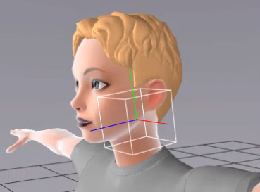
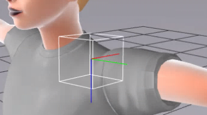
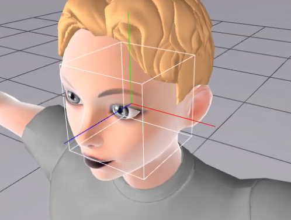

Skeletal Joints (joints orientation and other considerations)
Head, LeftEye and RightEye joints need to be with Z Axis orientated forward, Y Axis is up, X Axis to the side.

All joints in the Shoulder to Hand chain need to have the axis as follows:
-
Z Axis looking down relative to the avatar
-
X Axis looking back relative to the avatar
-
Y Axis looking towards the hand/fingers

LeftEye and RightEye joints forward axis (Z axis) need to go through the center of the eyes' pupil and be placed in the center of the eyes' geometry.

left eye joint
The size of the avatar should be in meters and should follow a relatively correct scale, 1.5-2.0m height.